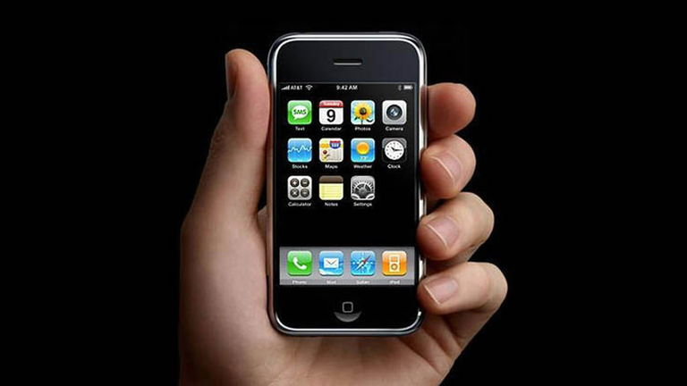

El iCono
Proyectos Clave de un iluminado
De la manzana mordida a la fruta prohibida
Proyectos clave y lecciones de éxito
Apple II
Tras la fundación de Apple Inc., uno de los primeros grandes éxitos fue la Apple II (1977). Este equipo destacó por ser una de las primeras computadoras personales producidas en masa con teclado integrado y gráficos a color.
La Apple II no solo consolidó la viabilidad económica de Apple, sino que contribuyó decisivamente a popularizar la computación doméstica y educativa. Representó el tránsito de la informática como herramienta exclusiva de especialistas hacia un recurso accesible para el público general.

Macintosh
En 1984, Apple lanzó la Macintosh, un proyecto impulsado intensamente por Jobs. Su mayor innovación fue la incorporación de una interfaz gráfica de usuario (GUI) y el uso del mouse, elementos que simplificaron radicalmente la interacción con la máquina.
El Macintosh introdujo una concepción distinta de la informática: centrada en la experiencia visual, la tipografía cuidada y la accesibilidad. Más que un producto, fue una declaración de principios sobre cómo debía sentirse la tecnología.
.jpg)
iPhone
En 2007, bajo el liderazgo de Jobs, Apple presentó el iPhone. Este dispositivo integró teléfono, reproductor musical e internet en un solo aparato con pantalla táctil.
El iPhone no solo redefinió la industria de la telefonía móvil, sino que inauguró la era de los smartphones modernos y de las aplicaciones móviles. Su impacto fue sistémico, transformó la comunicación, el comercio digital, el entretenimiento y la vida cotidiana a escala global.

Pixar
Más allá de la informática, Jobs incursionó en la industria cinematográfica al adquirir y desarrollar Pixar. Bajo su dirección estratégica, el estudio produjo películas pioneras como Toy Story, la primera película animada completamente por computadora.
Pixar no solo revolucionó la animación digital, sino que demostró que la innovación tecnológica podía integrarse con narrativas profundamente humanas. Este emprendimiento evidenció la amplitud de la visión de Jobs. su interés no se limitaba a dispositivos electrónicos, sino a la creación de experiencias culturales significativas.
.jpeg)
Proyectos y Emprendimientos
La trayectoria empresarial de Steve Jobs estuvo marcada por una constante: la voluntad de transformar industrias completas a través de productos que combinaran innovación técnica, diseño sofisticado y una experiencia de usuario intuitiva. Sus proyectos no fueron simples lanzamientos comerciales, sino apuestas estratégicas que redefinieron paradigmas tecnológicos y culturales.